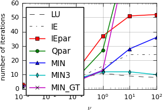
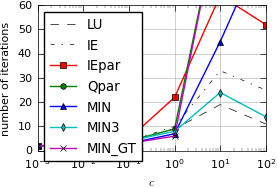
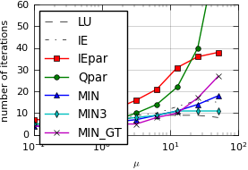
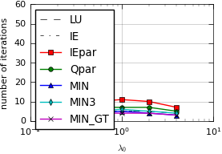

Full code: pySDC/projects/parallelSDC/preconditioner_playground.py
import os
import pickle
from collections import namedtuple
import numpy as np
import pySDC.helpers.plot_helper as plt_helper
from pySDC.helpers.stats_helper import get_sorted
from pySDC.implementations.controller_classes.controller_nonMPI import controller_nonMPI
from pySDC.implementations.problem_classes.AdvectionEquation_ND_FD import advectionNd
from pySDC.implementations.problem_classes.GeneralizedFisher_1D_FD_implicit import generalized_fisher
from pySDC.implementations.problem_classes.HeatEquation_ND_FD import heatNd_unforced
from pySDC.implementations.problem_classes.Van_der_Pol_implicit import vanderpol
from pySDC.implementations.sweeper_classes.generic_implicit import generic_implicit
ID = namedtuple('ID', ['setup', 'qd_type', 'param'])
def main():
# initialize level parameters (part I)
level_params = dict()
level_params['restol'] = 1e-08
# initialize sweeper parameters (part I)
sweeper_params = dict()
sweeper_params['quad_type'] = 'RADAU-RIGHT'
sweeper_params['num_nodes'] = 3
# initialize step parameters
step_params = dict()
step_params['maxiter'] = 100
# initialize controller parameters
controller_params = dict()
controller_params['logger_level'] = 30
# set up list of Q-delta types and setups
qd_list = ['LU', 'IE', 'IEpar', 'Qpar', 'MIN', 'MIN3', 'MIN_GT']
setup_list = [
('heat', 63, [10.0**i for i in range(-3, 3)]),
('advection', 64, [10.0**i for i in range(-3, 3)]),
('vanderpol', 2, [0.1 * 2**i for i in range(0, 10)]),
('fisher', 63, [2**i for i in range(-2, 3)]),
]
# setup_list = [('fisher', 63, [2 * i for i in range(1, 6)])]
# pre-fill results with lists of setups
results = dict()
for setup, nvars, param_list in setup_list:
results[setup] = (nvars, param_list)
# loop over all Q-delta matrix types
for qd_type in qd_list:
# assign implicit Q-delta matrix
sweeper_params['QI'] = qd_type
# loop over all setups
for setup, nvars, param_list in setup_list:
# initialize problem parameters (part I)
problem_params = dict()
if setup != 'vanderpol':
problem_params['nvars'] = nvars # number of degrees of freedom for each level
# loop over all parameters
for param in param_list:
# fill description for the controller
description = dict()
description['sweeper_class'] = generic_implicit # pass sweeper
description['sweeper_params'] = sweeper_params # pass sweeper parameters
description['step_params'] = step_params # pass step parameters
print('working on: %s - %s - %s' % (qd_type, setup, param))
# decide which setup to take
if setup == 'heat':
problem_params['nu'] = param
problem_params['freq'] = 2
problem_params['bc'] = 'dirichlet-zero' # boundary conditions
level_params['dt'] = 0.1
description['problem_class'] = heatNd_unforced
description['problem_params'] = problem_params
description['level_params'] = level_params # pass level parameters
elif setup == 'advection':
problem_params['c'] = param
problem_params['order'] = 2
problem_params['freq'] = 2
problem_params['stencil_type'] = 'center' # boundary conditions
problem_params['bc'] = 'periodic' # boundary conditions
level_params['dt'] = 0.1
description['problem_class'] = advectionNd
description['problem_params'] = problem_params
description['level_params'] = level_params # pass level parameters
elif setup == 'vanderpol':
problem_params['newton_tol'] = 1e-09
problem_params['newton_maxiter'] = 20
problem_params['mu'] = param
problem_params['u0'] = np.array([2.0, 0])
level_params['dt'] = 0.1
description['problem_class'] = vanderpol
description['problem_params'] = problem_params
description['level_params'] = level_params
elif setup == 'fisher':
problem_params['nu'] = 1
problem_params['lambda0'] = param
problem_params['newton_maxiter'] = 20
problem_params['newton_tol'] = 1e-10
problem_params['interval'] = (-5, 5)
level_params['dt'] = 0.01
description['problem_class'] = generalized_fisher
description['problem_params'] = problem_params
description['level_params'] = level_params
else:
print('Setup not implemented..', setup)
exit()
# instantiate controller
controller = controller_nonMPI(
num_procs=1, controller_params=controller_params, description=description
)
# get initial values on finest level
P = controller.MS[0].levels[0].prob
uinit = P.u_exact(0)
# call main function to get things done...
uend, stats = controller.run(u0=uinit, t0=0, Tend=level_params['dt'])
# filter statistics by type (number of iterations)
iter_counts = get_sorted(stats, type='niter', sortby='time')
# just one time-step, grep number of iteration and store
niter = iter_counts[0][1]
id = ID(setup=setup, qd_type=qd_type, param=param)
results[id] = niter
assert len(results) == (6 + 6 + 10 + 5) * 7 + 4, 'ERROR: did not get all results, got %s' % len(results)
# write out for later visualization
file = open('data/parallelSDC_iterations_precond.pkl', 'wb')
pickle.dump(results, file)
assert os.path.isfile('data/parallelSDC_iterations_precond.pkl'), 'ERROR: pickle did not create file'
def plot_iterations():
"""
Helper routine to plot iteration counts
"""
file = open('data/parallelSDC_iterations_precond.pkl', 'rb')
results = pickle.load(file)
# find the lists/header required for plotting
qd_type_list = []
setup_list = []
for key in results.keys():
if isinstance(key, ID):
if key.qd_type not in qd_type_list:
qd_type_list.append(key.qd_type)
elif isinstance(key, str):
setup_list.append(key)
print('Found these type of preconditioners:', qd_type_list)
print('Found these setups:', setup_list)
assert len(qd_type_list) == 7, 'ERROR did not find five preconditioners, got %s' % qd_type_list
assert len(setup_list) == 4, 'ERROR: did not find three setup, got %s' % setup_list
qd_type_list = ['LU', 'IE', 'IEpar', 'Qpar', 'MIN', 'MIN3', 'MIN_GT']
marker_list = [None, None, 's', 'o', '^', 'd', 'x']
color_list = ['k', 'k', 'r', 'g', 'b', 'c', 'm']
plt_helper.setup_mpl()
# loop over setups and Q-delta types: one figure per setup, all Qds in one plot
for setup in setup_list:
plt_helper.newfig(textwidth=238.96, scale=0.89)
for qd_type, marker, color in zip(qd_type_list, marker_list, color_list):
niter = np.zeros(len(results[setup][1]))
for key in results.keys():
if isinstance(key, ID):
if key.setup == setup and key.qd_type == qd_type:
xvalue = results[setup][1].index(key.param)
niter[xvalue] = results[key]
if qd_type == 'LU':
ls = '--'
lw = 0.5
elif qd_type == 'IE':
ls = '-.'
lw = 0.5
else:
ls = '-'
lw = 1
plt_helper.plt.semilogx(
results[setup][1],
niter,
label=qd_type,
lw=lw,
linestyle=ls,
color=color,
marker=marker,
markeredgecolor='k',
)
if setup == 'heat':
xlabel = r'$\nu$'
elif setup == 'advection':
xlabel = r'$c$'
elif setup == 'fisher':
xlabel = r'$\lambda_0$'
elif setup == 'vanderpol':
xlabel = r'$\mu$'
else:
print('Setup not implemented..', setup)
exit()
plt_helper.plt.ylim([0, 60])
plt_helper.plt.legend(loc=2, ncol=1)
plt_helper.plt.ylabel('number of iterations')
plt_helper.plt.xlabel(xlabel)
plt_helper.plt.grid()
# save plot as PDF and PGF
fname = 'data/parallelSDC_preconditioner_' + setup
plt_helper.savefig(fname)
assert os.path.isfile(fname + '.pdf'), 'ERROR: plotting did not create PDF file'
# assert os.path.isfile(fname + '.pgf'), 'ERROR: plotting did not create PGF file'
assert os.path.isfile(fname + '.png'), 'ERROR: plotting did not create PNG file'
if __name__ == "__main__":
main()
plot_iterations()
Results:
   {kind=link}
{kind=link}
{kind=link}
{kind=link}